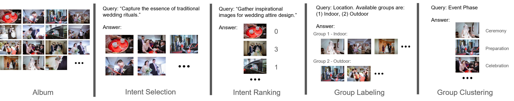
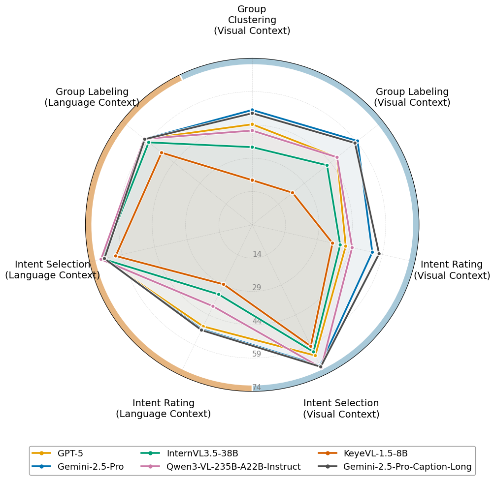
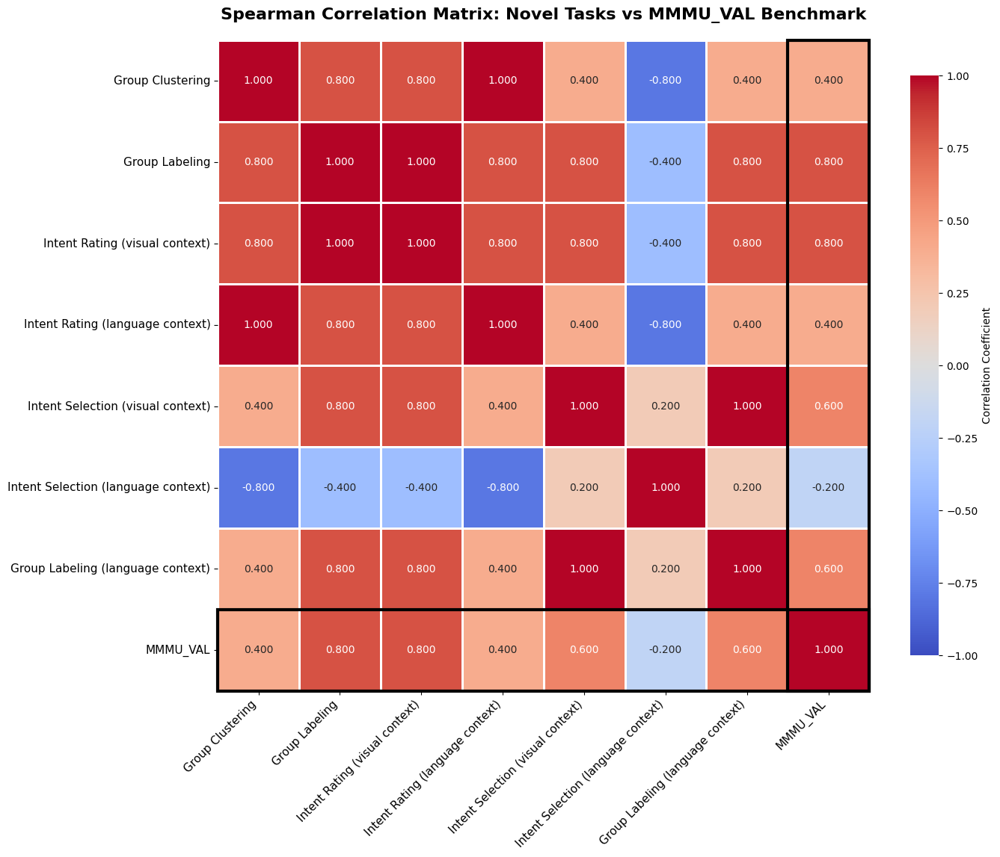

Abstract
Automatic album organization has been studied extensively over the past decades due to significant progress in digital photography. Recent Vision-Language Models (VLMs) have shown strong performance on multi-image understanding, making them natural candidates for automating album organization workflows. While VLMs' abilities in multi-image understanding have been widely studied, their performance on album organization remains underexplored. To bridge this gap, we introduce AlbumBench, the first comprehensive benchmark for automatic album organization. Specifically, we (1) define album organization tasks as photo selection for album-specific user objectives, photo rating according to how well user intents are fulfilled, and album-specific photo grouping given a user query that requires contextual understanding of the album; (2) establish AlbumBench, a benchmark dataset containing 27,051 images across 641 albums with 5 annotations per image; and (3) evaluate mainstream open-source and proprietary VLMs on AlbumBench. We show that AlbumBench presents unique challenges compared to traditional multi-image understanding benchmarks due to its requirement for understanding album context and user intent. Our findings reveal a significant performance gap between open-source and proprietary VLMs on album organization tasks. Despite this gap, even the best-performing proprietary models sometimes struggle with tasks that humans find relatively easy. We hope that AlbumBench can serve as a foundation for unifying album organization research and motivate improvements in VLMs' performance on these tasks.

The four album organization tasks: Intent Selection, Intent Rating, Group Labeling, and Group Clustering.

Performance of representative models per task type. Closed-source models generally outperform open-source ones.

Spearman correlations with MMMU-val show AlbumBench measures capabilities complementary to existing benchmarks.
Video Presentation
Poster
BibTeX
@inproceedings{huang2026albumbench,
title={Beyond Single Images: A Comprehensive Benchmark for Album-Level Vision-Language Understanding},
author={Huang, Shawn and Price, Brian and Fan, Yifei and Morse, Bryan},
booktitle={Proceedings of the IEEE/CVF Conference on Computer Vision and Pattern Recognition (CVPR)},
year={2026}
}